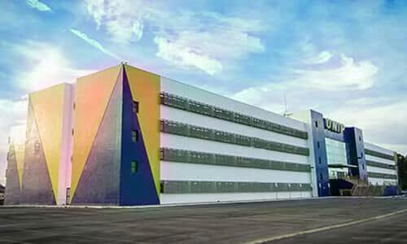

Laboratório 05 - Entrada e Saída (CG)
Cores
Objetivo: Desenvolver um programa em python que manipula e processa imagens.
Introdução
Uma imagem é formada através da distribuição da energia luminosa, em que parte dessa energia é absorvida, parte dela é transmitida, dependendo da opacidade do objeto, e parte é refletida. Essa energia luminosa refletida que é captada pelo nosso olho ou pelas câmeras.
Bibliotecas
Para a implementação desse lab você muito provavelmente irá precisar instalar as seguintes bibliotecas em python:
- numpy
- PIL ou pillow
Exemplo
from PIL import Image
import numpy as np
img = Image.open('unip.jpg')
img.show()
img.save('unip2.jpg')
Para executar o exemplo anterior, você deve baixar a seguinte imagem no mesmo diretório do código anterior.

Roteiro
Siga as instruções dos slides de aula a seguir: Cores.
- Use o comando
resizepara reamostrar a imagem original (como na página 7); - Faça o split dos canais (como na página 16)
- Reamostre o canal vermelho, faça o merge e salve a imagem resultante
- Reamostre o canal verde, faça o merge e salve a imagem resultante
- Reamostre o canal azul, faça o merge e salve a imagem resultante
Entrega
Escrever um relatório com os seguintes tópicos:
- Introdução: fazer um breve resumo sobre entrada e saída em sistemas operacionais;
- Resultados: apresentar as imagens resultantes geradas;
- Conclusão